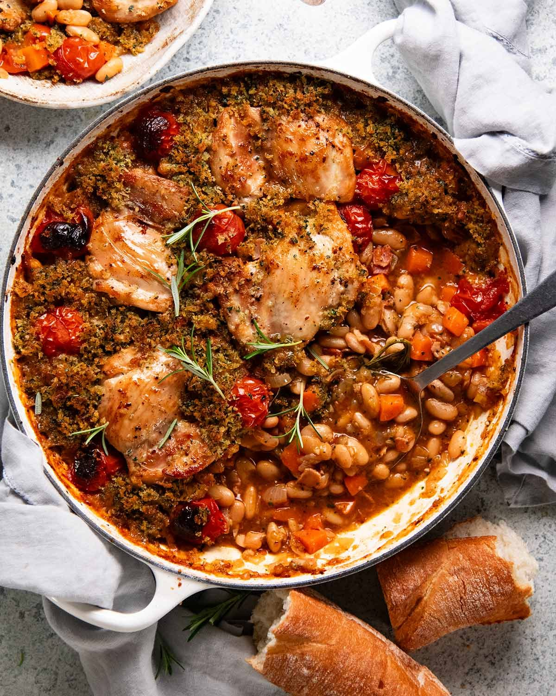

Chicken Cassoulet
Original LinkCassoulet is a bean and meat casserole with a crispy topping that originates from Southern France. Though traditionally it uses duck confit and sausages, this version uses chicken thighs instead.

| Ingredients |
|---|
| 2 tbsp cornflour / cornstarch |
| 1.75lb / 6 pieces boneless skinless chicken thighs |
| 1 tsp salt |
| 1 tsp black pepper |
| 2 tbsp olive oil |
| 7 oz bacon (cut into small pieces) |
| 2 brown onions (diced) |
| 2 carrots (peeled, cut into half-inch thick pieces) |
| 3 garlic cloves (minced) |
| 1 tbsp tomato paste |
| 1/2 tsp thyme |
| 1 tsp rosemary |
| 2 bay leaves |
| 1/4 cup of chardonnay or other dry white wine |
| 1 1/2 cup chicken stock |
| 3 14oz cans cannellini beans (drained) |
| 12 cherry tomatoes |
| Topping |
|---|
| 1/2 cup panko breadcrumbs |
| 2 tsp parsley |
| 2 tbsp olive oil |
| 1/4 tsp salt |